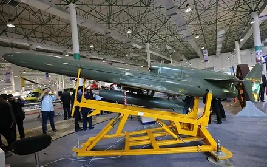

Karrar
HESA · ایران · پهپاد جت هدف و تهاجمی
پهپاد جتموتور ایرانی که با بوستر راکتی از ریل پرتاب میشود.
| خدمه | ۰ نفر |
|---|---|
| سرعت بیشینه | ۹۰۰ کیلومتر بر ساعت |
| برد | ۱,۰۰۰ کیلومتر |
| حداکثر وزن برخاست | ۷۰۰ کیلوگرم |
| طول | ۴.۰ متر |
| دهانه بال | ۲.۵ متر |
| موتور | ۱ × جت |
| نخستین پرواز | ۲۰۱۰ |
| ورود به خدمت | ۲۰۱۰ |
HESA Karrar — Uncrewed aircraft. Jet target and strike drone. An Iranian jet-powered drone launched from a rail with a rocket booster.
باز کردن در اطلس T-AIR